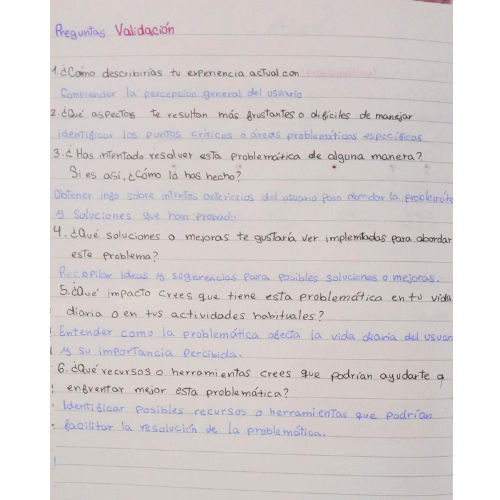
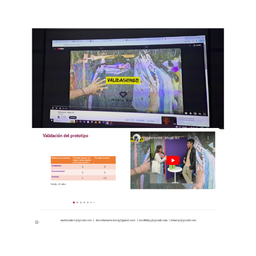

Bitácora

Acá registraré el progreso de mis clases.

Sesión 2:
Se exploraron los elementos fundamentales de la innovación, destacando la importancia de la creatividad, la investigación y el desarrollo, así como la aplicación de la tecnología para resolver problemas y satisfacer necesidades no cubiertas en el mercado. Se presentaron los diez principios del buen diseño, resaltando conceptos como la innovación, la utilidad, la estética y la claridad en la comunicación. Además, se habló sobre el concepto de biomimética como una fuente de inspiración para soluciones basadas en la naturaleza. También incluyó la presentación de ejemplos de proyectos realizados por otros alumnos, como el "Mew toy", un juguete diseñado para gatitos que fomenta la actividad física, y "Yatiqaña", un juguete de aprendizaje lingüístico dirigido a niños para promover el idioma quechua.

Sesión 3:
En esta sesión se habló un poco acerca del lenguaje HTML y algunos de sus códigos básicos. Se destacó que HTML se utiliza para estructurar páginas web, mientras que CSS se emplea para dar estilo y presentación a dichas páginas. Se mencionaron algunos elementos fundamentales de la estructura, como las etiquetas de apertura ( < p >) y de cierre (< / p >), así como la etiqueta < title >, que define el título de la página web. Además, se explicó cómo añadir vínculos utilizando la etiqueta < a > con el atributo "Href" para especificar la dirección URL a la que se debe dirigir el enlace. Estos conceptos nos ayudaron a tener una base para comprender mejor la creación y el diseño básico de páginas web y comenzar a realizar modificaciones en el Visual Studio.

Sesión 4:
En esta sesión vimos la elaboración de la pregunta generativa y preguntas de validación para enfrentar problemáticas específicas.La pregunta generativa proporcionada se centró en cómo alcanzar un producto innovador que facilite la solución de un problema con la ayuda de tecnologías de diseño. Se detallaron ocho preguntas de validación que abordan la experiencia del usuario, el impacto en la vida diaria del usuario y los recursos necesarios, lo que brindó un marco para comprender las necesidades del usuario y generar soluciones.

Sesión 6:
En esta sesión exploramos la aplicación Oneshape, la cual se enfocó en la navegación por la plataforma para luego proceder a realizar un ejercicio práctico con el objetivo de comprender mejor las herramientas que tiene. Realizamos una cámara en 3D paso a paso.

Sesión 7:
En esta sesión expusimos las funciones que tendría nuestro proyecto, nuestros bocetos, los bocetos elegidos por cada integrante, las variantes de los bocetos y los componentes que tendría.

Sesión 8:
En esta sesión nuestros prototipos de baja fidelidad.

Sesión 9:
En esta sesión realizamos la lista de Inputs y Outputs de nuestro componentes, vimos los sensores que requeriría nuestro proyecto y realizamos el diagrama de flujo.

Sesión 10:
En esta sesión expusimos nuestra página web junto con las validación, además mostramos nuestro prototipo.